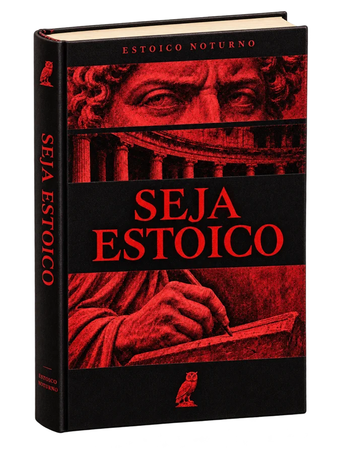
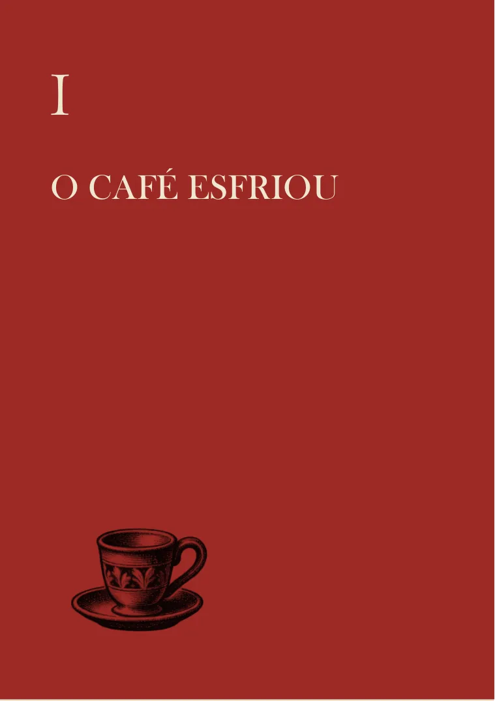
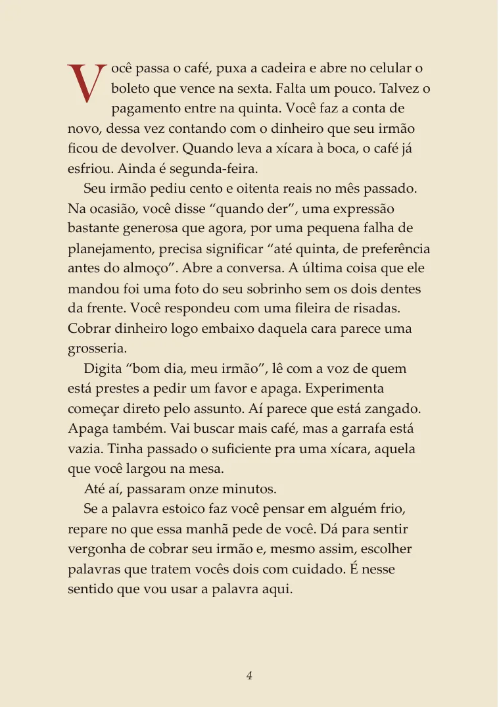
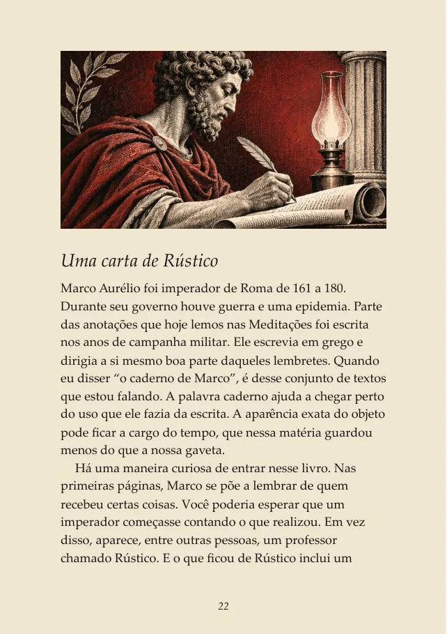
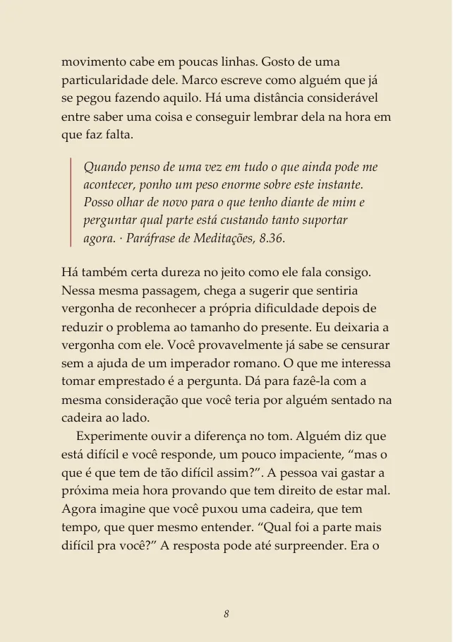
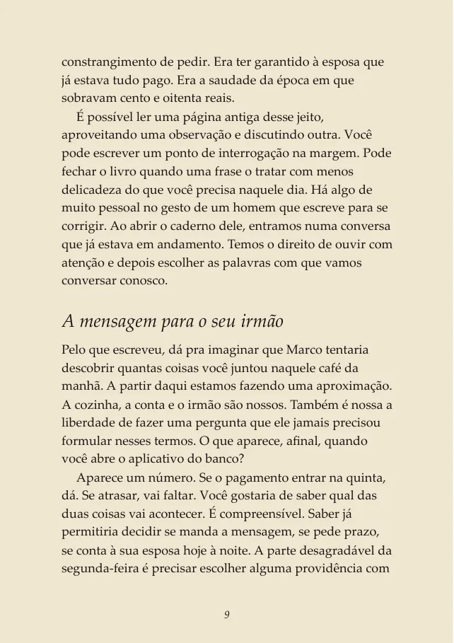
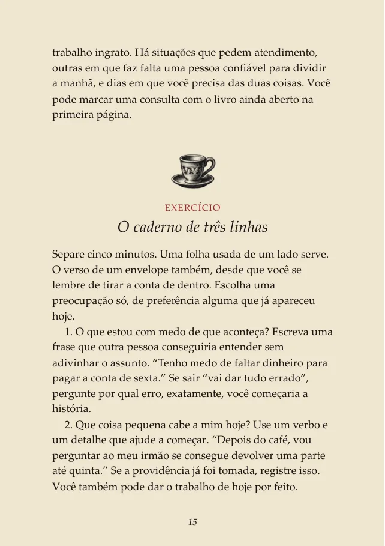
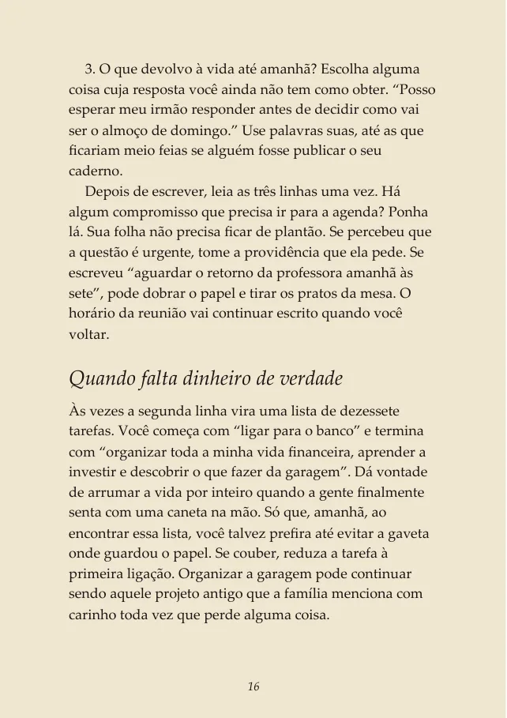

Seja Estoico é um livro sobre ansiedade: como lidar com ela usando o que Marco Aurélio, imperador de Roma, escrevia pra si mesmo num caderno que nunca foi feito para ser lido.
Quero o Seja Estoico
Você está na cozinha. A xícara na mão. O café já esfriou faz tempo.
A cabeça está longe: na conversa de amanhã, na conta do mês, naquela mensagem que ninguém respondeu.
Não aconteceu nada. Mesmo assim, o peito está apertado.
À noite é pior. O corpo deita, a mente não. Ela repassa, ensaia, imagina.
E de manhã você acorda cansado de uma briga que só existiu por dentro.
Você já ouviu. "Respira." "Não pensa nisso." "Vai dar tudo certo." E você tentou. Só que, quanto mais tenta não pensar, mais pensa.
Não é falta de força de vontade. A ansiedade não é uma coisa só. Ela é feita de muitas coisas pequenas, misturadas, todas falando ao mesmo tempo. Por isso parece enorme. Por isso parece que não tem por onde começar.
Antes de acalmar, é preciso separar. Olhar cada preocupação separada, em vez de sentir tudo ao mesmo tempo. Uma coisa de cada vez.
Marco Aurélio governou Roma por quase vinte anos. Não foi um período tranquilo. Passou boa parte dele em acampamentos de guerra, longe de casa, enquanto uma peste matava gente em todo o império. Enterrou filhos. Perdeu a esposa. Foi traído por um general em quem confiava.
E, à noite, escrevia. Não para publicar. Escrevia pra si mesmo, num caderno particular, para lembrar como pensar quando a cabeça queria fugir. Esse caderno chegou até nós com o nome de Meditações.
Lendo de perto, ele não parece uma estátua. Parece alguém cansado, com medo, irritado com gente difícil, tentando de novo no dia seguinte. Alguém que lidava com a própria mente. Como você.
Você sabe sempre onde está. Seis passos, do seu dia a dia até o caderno de Marco Aurélio, e de volta.

I
p.4
02
03
04
05
06Do café frio na cozinha até um caderno que é só seu. Cada capítulo cuida de um pedaço do que a ansiedade mistura.
Se for o seu caso agora, procure ajuda profissional ou um serviço de apoio. No Brasil, o CVV atende de graça, 24 horas, pelo telefone 188 ou em cvv.org.br.
Marco Aurélio governava um império e mesmo assim acordava com a mente em guerra. O que ele anotava para si mesmo cabe hoje num caderno, em poucos minutos por dia. Comece esta noite, no seu ritmo.
Não. É um livro. Ele pode ser um bom companheiro para quem faz terapia, mas não substitui o acompanhamento de um psicólogo, psiquiatra ou médico.
Se a ansiedade está atrapalhando muito a sua vida, com crises frequentes ou sintomas intensos, o primeiro passo é procurar um profissional de saúde. O livro pode ajudar junto com o tratamento, nunca no lugar dele.
Não dá para prometer um prazo, e desconfie de quem promete. Algumas pessoas sentem diferença na primeira vez que fazem o caderno de três linhas. Para outras, leva semanas de prática. O livro ensina a pensar e a conviver com a ansiedade, não a fazê-la desaparecer.
Não. Esse é o mal-entendido mais comum. Marco Aurélio sentia medo, luto e raiva, e escrevia sobre isso. Ser estoico é reconhecer o que você sente e, mesmo assim, conseguir escolher o que fazer.
Não. Tudo é explicado em linguagem simples, a partir de situações do dia a dia. Se você nunca ouviu falar de Marco Aurélio, o capítulo 2 apresenta ele.
E-book em PDF, com ilustrações originais em estilo de gravura. As fichas dos exercícios, no apêndice, podem ser impressas.
Sim. O PDF abre no celular, no tablet e no computador. Para as fichas, se preferir, dá para imprimir.
Logo depois da confirmação do pagamento, você recebe o acesso por e-mail. Se não encontrar, olhe a caixa de spam ou promoções.
Sim, 7 dias. Se não for o que você esperava, é só pedir o reembolso dentro desse prazo, como garante a lei para compras online.
Não. Elas são parafraseadas, em português simples, a partir das Meditações. E sempre que o livro imagina o que ele faria na sua situação, isso vem marcado como interpretação.
Seja Estoico é um livro de reflexão e exercícios inspirados na filosofia estoica. Ele não é tratamento, não faz diagnóstico e não substitui o acompanhamento de psicólogo, psiquiatra ou médico.
Se você está em sofrimento intenso ou tem pensamentos de se machucar, procure ajuda agora: CVV, ligação gratuita pelo 188, 24 horas, ou cvv.org.br. Em emergência, ligue 192 (SAMU).